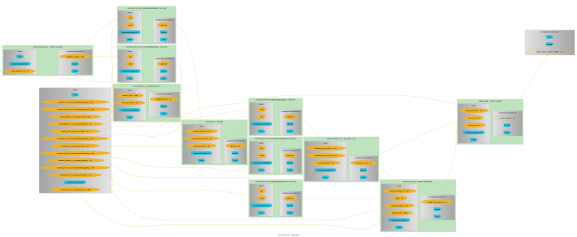
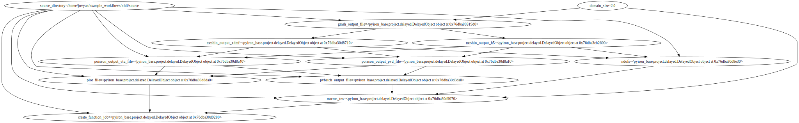

pyiron#
BAMresearch/NFDI4IngScientificWorkflowRequirements
Define workflow with pyiron_workflow#
import os
from workflow import (
generate_mesh as _generate_mesh,
convert_to_xdmf as _convert_to_xdmf,
poisson as _poisson,
plot_over_line as _plot_over_line,
substitute_macros as _substitute_macros,
compile_paper as _compile_paper,
)
from pyiron_workflow import Workflow, to_function_node
from python_workflow_definition.pyiron_workflow import write_workflow_json
generate_mesh = to_function_node("generate_mesh", _generate_mesh, "generate_mesh")
convert_to_xdmf = to_function_node("convert_to_xdmf", _convert_to_xdmf, "convert_to_xdmf")
poisson = to_function_node("poisson", _poisson, "poisson")
plot_over_line = to_function_node("plot_over_line", _plot_over_line, "plot_over_line")
substitute_macros = to_function_node("substitute_macros", _substitute_macros, "substitute_macros")
compile_paper = to_function_node("compile_paper", _compile_paper, "compile_paper")
wf = Workflow("my_workflow")
wf.domain_size = 2.0
wf.source_directory = os.path.abspath(os.path.join(os.curdir, "source"))
wf.gmsh_output_file = generate_mesh(
domain_size=wf.domain_size,
source_directory=wf.source_directory,
)
wf.meshio_output_dict = convert_to_xdmf(
gmsh_output_file=wf.gmsh_output_file,
)
wf.poisson_dict = poisson(
meshio_output_xdmf=wf.meshio_output_dict["xdmf_file"],
meshio_output_h5=wf.meshio_output_dict["h5_file"],
source_directory=wf.source_directory,
)
wf.pvbatch_output_file = plot_over_line(
poisson_output_pvd_file=wf.poisson_dict["pvd_file"],
poisson_output_vtu_file=wf.poisson_dict["vtu_file"],
source_directory=wf.source_directory,
)
wf.macros_tex_file = substitute_macros(
pvbatch_output_file=wf.pvbatch_output_file,
ndofs=wf.poisson_dict["numdofs"],
domain_size=wf.domain_size,
source_directory=wf.source_directory,
)
wf.paper_output = compile_paper(
macros_tex=wf.macros_tex_file,
plot_file=wf.pvbatch_output_file,
source_directory=wf.source_directory,
)
wf.draw(size=(10,10))

workflow_json_filename = "pyiron_workflow_nfdi.json"
write_workflow_json(graph_as_dict=wf.graph_as_dict, file_name=workflow_json_filename)
Load Workflow with aiida#
from aiida import load_profile
load_profile()
Profile<uuid='ab8c861a0e7f44b8b54d6acebc44dff5' name='pwd'>
from python_workflow_definition.aiida import load_workflow_json
wg = load_workflow_json(file_name=workflow_json_filename)
wg
wg.run()
05/24/2025 09:30:18 AM <282> aiida.orm.nodes.process.workflow.workchain.WorkChainNode: [REPORT] [3|WorkGraphEngine|continue_workgraph]: tasks ready to run: generate_mesh1
05/24/2025 09:30:20 AM <282> aiida.orm.nodes.process.workflow.workchain.WorkChainNode: [REPORT] [3|WorkGraphEngine|update_task_state]: Task: generate_mesh1, type: PyFunction, finished.
05/24/2025 09:30:20 AM <282> aiida.orm.nodes.process.workflow.workchain.WorkChainNode: [REPORT] [3|WorkGraphEngine|continue_workgraph]: tasks ready to run: convert_to_xdmf2
05/24/2025 09:30:22 AM <282> aiida.orm.nodes.process.workflow.workchain.WorkChainNode: [REPORT] [3|WorkGraphEngine|update_task_state]: Task: convert_to_xdmf2, type: PyFunction, finished.
05/24/2025 09:30:22 AM <282> aiida.orm.nodes.process.workflow.workchain.WorkChainNode: [REPORT] [3|WorkGraphEngine|continue_workgraph]: tasks ready to run: poisson3
05/24/2025 09:30:30 AM <282> aiida.orm.nodes.process.workflow.workchain.WorkChainNode: [REPORT] [3|WorkGraphEngine|update_task_state]: Task: poisson3, type: PyFunction, finished.
05/24/2025 09:30:30 AM <282> aiida.orm.nodes.process.workflow.workchain.WorkChainNode: [REPORT] [3|WorkGraphEngine|continue_workgraph]: tasks ready to run: plot_over_line4
05/24/2025 09:30:33 AM <282> aiida.orm.nodes.process.workflow.workchain.WorkChainNode: [REPORT] [3|WorkGraphEngine|update_task_state]: Task: plot_over_line4, type: PyFunction, finished.
05/24/2025 09:30:33 AM <282> aiida.orm.nodes.process.workflow.workchain.WorkChainNode: [REPORT] [3|WorkGraphEngine|continue_workgraph]: tasks ready to run: substitute_macros5
05/24/2025 09:30:34 AM <282> aiida.orm.nodes.process.workflow.workchain.WorkChainNode: [REPORT] [3|WorkGraphEngine|update_task_state]: Task: substitute_macros5, type: PyFunction, finished.
05/24/2025 09:30:34 AM <282> aiida.orm.nodes.process.workflow.workchain.WorkChainNode: [REPORT] [3|WorkGraphEngine|continue_workgraph]: tasks ready to run: compile_paper6
05/24/2025 09:30:50 AM <282> aiida.orm.nodes.process.workflow.workchain.WorkChainNode: [REPORT] [3|WorkGraphEngine|update_task_state]: Task: compile_paper6, type: PyFunction, finished.
05/24/2025 09:30:50 AM <282> aiida.orm.nodes.process.workflow.workchain.WorkChainNode: [REPORT] [3|WorkGraphEngine|continue_workgraph]: tasks ready to run:
05/24/2025 09:30:50 AM <282> aiida.orm.nodes.process.workflow.workchain.WorkChainNode: [REPORT] [3|WorkGraphEngine|finalize]: Finalize workgraph.
Load Workflow with jobflow#
from python_workflow_definition.jobflow import load_workflow_json
from jobflow.managers.local import run_locally
flow = load_workflow_json(file_name=workflow_json_filename)
result = run_locally(flow)
result
2025-05-24 09:31:15,165 INFO Started executing jobs locally
2025-05-24 09:31:15,364 INFO Starting job - generate_mesh (4cc4e3d9-39aa-4c20-a047-a029b6812d61)
2025-05-24 09:31:16,480 INFO Finished job - generate_mesh (4cc4e3d9-39aa-4c20-a047-a029b6812d61)
2025-05-24 09:31:16,481 INFO Starting job - convert_to_xdmf (8527c563-c0b1-4ae5-a6c3-00ae25ad2508)
2025-05-24 09:31:17,834 INFO Finished job - convert_to_xdmf (8527c563-c0b1-4ae5-a6c3-00ae25ad2508)
2025-05-24 09:31:17,836 INFO Starting job - poisson (58b31d24-51f9-4b9a-ac3e-88a7f01a09ad)
2025-05-24 09:31:20,318 INFO Finished job - poisson (58b31d24-51f9-4b9a-ac3e-88a7f01a09ad)
2025-05-24 09:31:20,318 INFO Starting job - plot_over_line (b095dc38-f858-4c34-876c-df8f8b851a5f)
2025-05-24 09:31:21,717 INFO Finished job - plot_over_line (b095dc38-f858-4c34-876c-df8f8b851a5f)
2025-05-24 09:31:21,718 INFO Starting job - substitute_macros (656e820d-20d5-4665-bb8a-43807ed6b2e9)
2025-05-24 09:31:22,542 INFO Finished job - substitute_macros (656e820d-20d5-4665-bb8a-43807ed6b2e9)
2025-05-24 09:31:22,543 INFO Starting job - compile_paper (52de4e6d-7574-401b-bcdb-ae6c298cc6b9)
2025-05-24 09:31:24,556 INFO Finished job - compile_paper (52de4e6d-7574-401b-bcdb-ae6c298cc6b9)
2025-05-24 09:31:24,557 INFO Finished executing jobs locally
{'4cc4e3d9-39aa-4c20-a047-a029b6812d61': {1: Response(output='/home/jovyan/example_workflows/nfdi/preprocessing/square.msh', detour=None, addition=None, replace=None, stored_data=None, stop_children=False, stop_jobflow=False, job_dir=PosixPath('/home/jovyan/example_workflows/nfdi'))},
'8527c563-c0b1-4ae5-a6c3-00ae25ad2508': {1: Response(output={'xdmf_file': '/home/jovyan/example_workflows/nfdi/preprocessing/square.xdmf', 'h5_file': '/home/jovyan/example_workflows/nfdi/preprocessing/square.h5'}, detour=None, addition=None, replace=None, stored_data=None, stop_children=False, stop_jobflow=False, job_dir=PosixPath('/home/jovyan/example_workflows/nfdi'))},
'58b31d24-51f9-4b9a-ac3e-88a7f01a09ad': {1: Response(output={'numdofs': 357, 'pvd_file': '/home/jovyan/example_workflows/nfdi/processing/poisson.pvd', 'vtu_file': '/home/jovyan/example_workflows/nfdi/processing/poisson000000.vtu'}, detour=None, addition=None, replace=None, stored_data=None, stop_children=False, stop_jobflow=False, job_dir=PosixPath('/home/jovyan/example_workflows/nfdi'))},
'b095dc38-f858-4c34-876c-df8f8b851a5f': {1: Response(output='/home/jovyan/example_workflows/nfdi/postprocessing/plotoverline.csv', detour=None, addition=None, replace=None, stored_data=None, stop_children=False, stop_jobflow=False, job_dir=PosixPath('/home/jovyan/example_workflows/nfdi'))},
'656e820d-20d5-4665-bb8a-43807ed6b2e9': {1: Response(output='/home/jovyan/example_workflows/nfdi/postprocessing/macros.tex', detour=None, addition=None, replace=None, stored_data=None, stop_children=False, stop_jobflow=False, job_dir=PosixPath('/home/jovyan/example_workflows/nfdi'))},
'52de4e6d-7574-401b-bcdb-ae6c298cc6b9': {1: Response(output='/home/jovyan/example_workflows/nfdi/postprocessing/paper.pdf', detour=None, addition=None, replace=None, stored_data=None, stop_children=False, stop_jobflow=False, job_dir=PosixPath('/home/jovyan/example_workflows/nfdi'))}}
Load Workflow with pyiron_base#
from python_workflow_definition.pyiron_base import load_workflow_json
delayed_object_lst = load_workflow_json(file_name=workflow_json_filename)
delayed_object_lst[-1].draw()

delayed_object_lst[-1].pull()
The job generate_mesh_47725c16637f799ac042e47468005db3 was saved and received the ID: 1
The job convert_to_xdmf_d6a46eb9a4ec352aa996e783ec3c785f was saved and received the ID: 2
The job poisson_3c147fc86db87cf0c0f94bda333f8cd8 was saved and received the ID: 3
The job plot_over_line_ef50933291910dadcc8311924971e127 was saved and received the ID: 4
The job substitute_macros_63766eafd6b1980c7832dd8c9a97c96e was saved and received the ID: 5
The job compile_paper_128d1d58374953c00e95b8de62cbb10b was saved and received the ID: 6
'/home/jovyan/example_workflows/nfdi/postprocessing/paper.pdf'